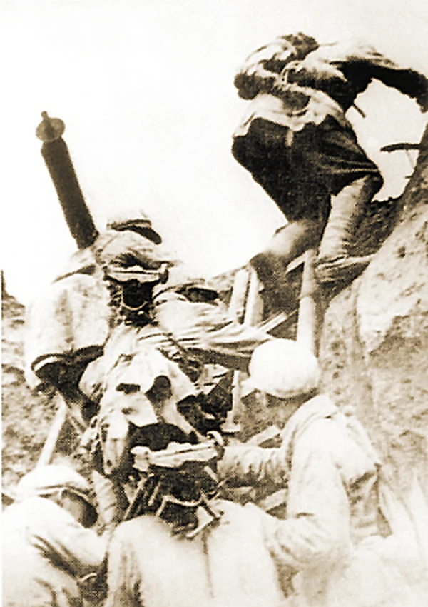

南梁：
山沟里的苏维埃
陕甘边革命根据地的心脏，后来成为长征的落脚点与奔赴抗日前线的出发点。
展开档案 ↗RED ARCHIVE / 档案
历史常常被压缩成几个年份。但档案提醒我们：每一个年份背后，都有具体的人、具体的选择和具体的代价。
这里放着八份我整理过的“纸页”。有旧址，有战役，有校史，也有今天仍在发生的青年行动。点击任意一张，可以看到更完整的故事。
陕甘边革命根据地的心脏，后来成为长征的落脚点与奔赴抗日前线的出发点。
展开档案 ↗
红军三大主力在会宁、将台堡等地会师，长征在这里画上句号。
展开档案 ↗
经过激烈攻坚，兰州于 8 月 26 日解放。中山桥见证了一座城市的黎明。
展开档案 ↗
兰州战役中最激烈的争夺之一。山梁上一寸一寸的推进，换来城内的天亮。
展开档案 ↗国立兽医学院在兰州创建。首任院长盛彤笙，把“臻进人类健康、裨益国民生计”写进办学初心。
展开档案 ↗
西北畜牧兽医学院与筹建中的甘肃农学院合并，学校进入新的发展阶段。
展开档案 ↗
当国歌响起，年轻的目光越过旗杆，落在更远的地方。传承从这一刻开始。
展开档案 ↗“我不敢说自己读懂了历史，但我愿意从今天开始，认真对待脚下的土地。”
展开档案 ↗没有找到对应的档案。换一个关键词，或者回到“全部”。